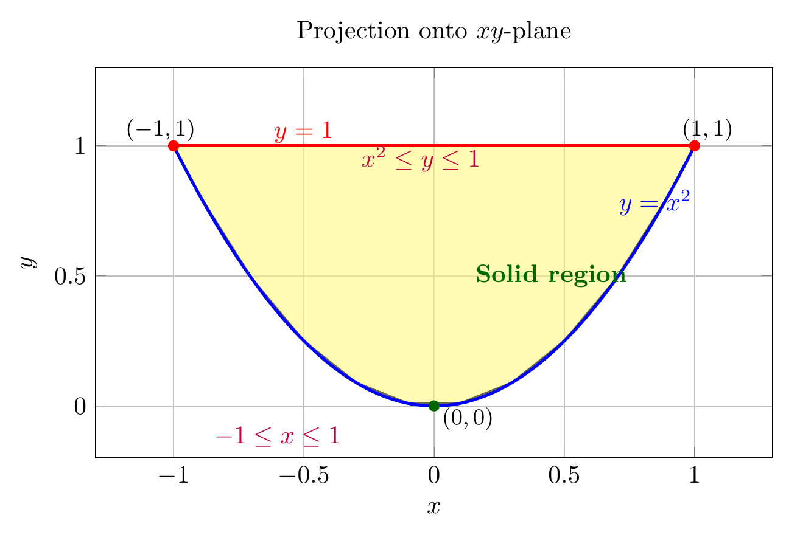

Please solve the problem in the following image.
(Image `20260929_022002_702061_utc_0800_0.png`. Alt text: Image: human_20260929_022002_702061_utc_0800)
20260929_022002_702061_utc_0800_0.png
End of problem
Answer
## Setting Up the Region
The solid is bounded by:
- The parabolic cylinder $y = x^2$
- The plane $z = 0$
- The plane $y + z = 1$ (equivalently $z = 1 - y$)
**Determining the region $E$:**
Since $z$ ranges from $0$ to $1 - y$, we must have $y \leq 1$. The parabolic cylinder $y = x^2$ has vertex at the origin and opens in the positive $y$ direction. Because the solid lies *inside* the parabolic cylinder (i.e., where $y \geq x^2$) and is closed above by $y = 1$, the region is
$$
E = \left\{(x, y, z) \;\middle|\; x^2 \leq y \leq 1,\ 0 \leq z \leq 1 - y\right\}
$$
For $x$, the condition $x^2 \leq 1$ gives $-1 \leq x \leq 1$. The parabolic boundary meets the line $y = 1$ at $x = \pm 1$.
---
pyplot_0.png
[PGFplots / tikz plot.](./pgfplots_0.tex)
pgfplots_0.png
---
The figure above shows the solid $E$ in 3D (left): the orange surface is the parabolic cylinder $y = x^2$; the bottom (blue) is $z = 0$; the top (red) is $z = 1 - y$. The three colored curves are the three boundary edges of the solid.
---
\documentclass[border=5pt]{standalone}
\usepackage{pgfplots}
\pgfplotsset{compat=1.18}
\begin{document}
\begin{tikzpicture}
\begin{axis}[
title={Projection onto $xy$-plane},
xlabel={$x$}, ylabel={$y$},
xmin=-1.3, xmax=1.3,
ymin=-0.2, ymax=1.3,
axis equal image,
grid=both,
width=11cm, height=11cm,
]
% Shade region: x^2 <= y <= 1
\addplot[draw=black, fill=yellow!50, opacity=0.6, thick] coordinates {
(-1, 1) (1, 1) (0.9, 0.81) (0.7, 0.49) (0.5, 0.25) (0.3, 0.09) (0.1, 0.01)
(-0.1, 0.01) (-0.3, 0.09) (-0.5, 0.25) (-0.7, 0.49) (-0.9, 0.81) (-1, 1)
};
% Parabola y = x^2
\addplot[blue, very thick, domain=-1:1, samples=100] {x^2};
% Line y = 1
\addplot[red, very thick, domain=-1:1] {1};
% Annotations
\node[blue] at (axis cs:0.85, 0.78) {$y=x^2$};
\node[red] at (axis cs:-0.5, 1.05) {$y=1$};
\node[green!40!black, font=\bfseries] at (axis cs:0.45, 0.5) {Solid region};
\node[purple] at (axis cs:-0.05, 0.95) {$x^2 \le y \le 1$};
\node[purple] at (axis cs:-0.6, -0.12) {$-1 \le x \le 1$};
% Mark key points
\addplot[only marks, mark=*, mark size=2pt, color=red] coordinates {(-1,1) (1,1)};
\addplot[only marks, mark=*, mark size=2pt, color=green!40!black] coordinates {(0,0)};
\node[font=\small] at (axis cs:1.05, 1.06) {$(1,1)$};
\node[font=\small] at (axis cs:-1.05, 1.06) {$(-1,1)$};
\node[font=\small] at (axis cs:0.13, -0.05) {$(0,0)$};
\end{axis}
\end{tikzpicture}
\end{document}

pgfplots_1.png
---
The figure above shows the **projection of $E$ onto the $xy$-plane** (right): the region is bounded by the parabola $y = x^2$ below and the line $y = 1$ above, with $-1 \leq x \leq 1$.
The density is $\rho(x, y, z) = \sqrt{x^2 + y^2}$.
---
## (a) Mass
The mass is
$$
m = \iiint_E \rho\, dV = \int_{-1}^{1} \int_{x^2}^{1} \int_{0}^{1 - y} \sqrt{x^2 + y^2}\, dz\, dy\, dx.
$$
(Since $\rho$ is independent of $z$, the inner integral is simply $\int_0^{1-y}\sqrt{x^2+y^2}\,dz = (1-y)\sqrt{x^2+y^2}$.)
---
## (b) Center of Mass
Define the first moments
$$
M_{yz} = \iiint_E x\rho\, dV, \qquad
M_{xz} = \iiint_E y\rho\, dV, \qquad
M_{xy} = \iiint_E z\rho\, dV.
$$
Then $\displaystyle \bar{x} = \frac{M_{yz}}{m},\ \bar{y} = \frac{M_{xz}}{m},\ \bar{z} = \frac{M_{xy}}{m}$. Using the same iterated order:
$$
M_{yz} = \int_{-1}^{1} \int_{x^2}^{1} \int_{0}^{1 - y} x\sqrt{x^2 + y^2}\, dz\, dy\, dx,
$$
$$
M_{xz} = \int_{-1}^{1} \int_{x^2}^{1} \int_{0}^{1 - y} y\sqrt{x^2 + y^2}\, dz\, dy\, dx,
$$
$$
M_{xy} = \int_{-1}^{1} \int_{x^2}^{1} \int_{0}^{1 - y} z\sqrt{x^2 + y^2}\, dz\, dy\, dx.
$$
**Symmetry remark.** Both the region $E$ and the density $\sqrt{x^2 + y^2}$ are symmetric under $x \mapsto -x$, so $M_{yz} = 0$ and $\bar{x} = 0$. Numerical evaluation gives $\bar{y} \approx 0.534,\ \bar{z} \approx 0.233$.
---
## (c) Moment of Inertia about the $z$-axis
The distance from a point $(x, y, z)$ to the $z$-axis is $\sqrt{x^2 + y^2}$, so
$$
I_z = \iiint_E (x^2 + y^2)\,\rho\, dV
= \int_{-1}^{1} \int_{x^2}^{1} \int_{0}^{1 - y} (x^2 + y^2)\,\sqrt{x^2 + y^2}\, dz\, dy\, dx.
$$
Equivalently,
$$
\boxed{\;I_z = \int_{-1}^{1} \int_{x^2}^{1} \int_{0}^{1 - y} (x^2 + y^2)^{3/2}\, dz\, dy\, dx\;}
$$
(Inner $z$-integral gives $(1-y)(x^2+y^2)^{3/2}$; numerical evaluation gives $I_z \approx 0.159$.)